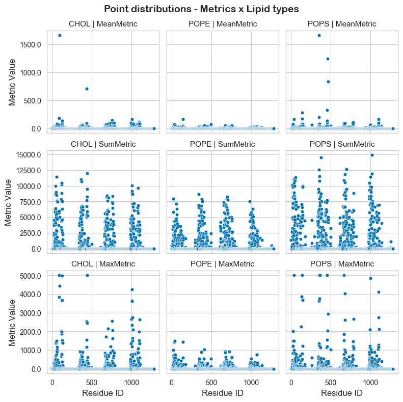

prolintpy: Automatic analysis of lipid-protein interactions
In case of issues, please contact besian.sejdiu@stjude.org or tieleman@ucalgary.ca.
Summary
Introduction
prolintpy is a lightweight python library that aimes to automate the analysis and visualization of lipid-protein interactions.
It is districbuted as part of the ProLint framework with the aim of bridging the widening gap between data generation and gaining insight on biologically-relevant interactions between lipids and proteins. prolintpy is the library that the ProLint webserver uses on the backend to automate topology generation and analysis of lipid-protein interactions. Nevertheless, prolintpy includes a dedicated interface for the visualization of lipid-protein interactions similar to the webserver which can be accessed through JupyterLab/Jupyter Notebook.
You can use prolintpy for the following:
Automatically generate a topology description of your system (no tpr file needed)
Calculate contact-based metrics for lipid-protein interactions
Calculate 2D and 3D densities (3D densities are work in progress)
Calculate physics-based properties (in progress)
Interactively visualize lipid-protein interactions
Installation
Note: Python v3.6 or v3.7 are supported.
- Method 1:
pip install prolintpy- Method 2:
git clone https://github.com/ProLint/prolintpy.gitcd prolintpyconda env create -f environment.ymlconda activate prolint- Method 3:
git clone https://github.com/ProLint/prolintpy.gitcd prolintpypython setup.py install- Method 4 (if MDTraj causes problem):
conda create --name prolint python=3.7conda activate prolintconda install -c conda-forge mdtrajpython -m pip install prolintpyprolintpy relies on MDTraj to read input data files, as such, it is the only module that has to be imported alongside prolintpy:
import numpy as np
import mdtraj as md
import prolintpy as plLoading data and topology description
Head over to https://github.com/ProLint/tutorials/tree/main/data and download the following two files: test_data_1.gro and test_data_1.xtc.
The system we are loading contains only lipids and protein beads (water and ions have been removed). This is important otherwise prolintpy may treat water as if it were a lipid.
Fig. 1 shows the system we are going to load and work with.
# MDTraj v1.9.6 seems to have a bug when reading Martini coordinate files.
# That is why prolintpy currently forces the installation of v1.9.5
t = md.load('test_data_1.xtc', top='test_data_1.gro')
tOutput:
<mdtraj.Trajectory with 17 frames, 23820 atoms, 3240 residues, and unitcells at 0x7fe268532a10>Load the data to prolintpy and define the protein and lipid topology
We first specify the resolution of the input data and indicate if we want to combine the proteins (only applicable if there are more than one protein in the system). Combining proteins will result in the calculated metrics being averages of all copies. In our system we only have one protein so we do not need it.
resolution = "martini"
combine_proteins = False
lipids = pl.Lipids(t.topology, resolution=resolution)
proteins = pl.Proteins(t.topology, resolution=resolution).system_proteins(merge=combine_proteins)Extracting information from the input system
Get all the lipid residues in the system:
lipids.lipid_names()Output:
array(['POPE', 'POPS', 'CHOL'], dtype=object)Get the names of the different lipids as well as their count:
lipids.lipid_count()Output:
{'POPE': 652, 'POPS': 652, 'CHOL': 652}Get a pandas DataFrame for the defined systems:
lipids.ldf.head()Output:
serial name element resSeq resName chainID segmentID
2956 2957 NH3 N 1285 POPE 0
2957 2958 PO4 P 1285 POPE 0
2958 2959 GL1 VS 1285 POPE 0
2959 2960 GL2 VS 1285 POPE 0
2960 2961 C1A C 1285 POPE 0Retrieve the residue IDs of all cholesterol lipids:
lipids.ldf[lipids.ldf.resName == "CHOL"].resSeq.unique()Output:
array([1937, 1938, 1939, 1940, 1941, 1942, 1943, 1944, 1945, 1946, 1947,
1948, 1949, 1950, 1951, 1952, 1953, 1954, 1955, 1956, 1957, 1958,
1959, 1960, 1961, 1962, 1963, 1964, 1965, 1966, 1967, 1968, 1969,
1970, 1971, 1972, 1973, 1974, 1975, 1976, 1977, 1978, 1979, 1980,
1981, 1982, 1983, 1984, 1985, 1986, 1987, 1988, 1989, 1990, 1991,
1992, 1993, 1994, 1995, 1996, 1997, 1998, 1999, 2000, 2001, 2002,
2003, 2004, 2005, 2006, 2007, 2008, 2009, 2010, 2011, 2012, 2013,
2014, 2015, 2016, 2017, 2018, 2019, 2020, 2021, 2022, 2023, 2024,
2025, 2026, 2027, 2028, 2029, 2030, 2031, 2032, 2033, 2034, 2035,
2036, 2037, 2038, 2039, 2040, 2041, 2042, 2043, 2044, 2045, 2046,
2047, 2048, 2049, 2050, 2051, 2052, 2053, 2054, 2055, 2056, 2057,
2058, 2059, 2060, 2061, 2062, 2063, 2064, 2065, 2066, 2067, 2068,
2069, 2070, 2071, 2072, 2073, 2074, 2075, 2076, 2077, 2078, 2079,
2080, 2081, 2082, 2083, 2084, 2085, 2086, 2087, 2088, 2089, 2090,
2091, 2092, 2093, 2094, 2095, 2096, 2097, 2098, 2099, 2100, 2101,
2102, 2103, 2104, 2105, 2106, 2107, 2108, 2109, 2110, 2111, 2112,
2113, 2114, 2115, 2116, 2117, 2118, 2119, 2120, 2121, 2122, 2123,
2124, 2125, 2126, 2127, 2128, 2129, 2130, 2131, 2132, 2133, 2134,
2135, 2136, 2137, 2138, 2139, 2140, 2141, 2142, 2143, 2144, 2145,
2146, 2147, 2148, 2149, 2150, 2151, 2152, 2153, 2154, 2155, 2156,
2157, 2158, 2159, 2160, 2161, 2162, 2163, 2164, 2165, 2166, 2167,
2168, 2169, 2170, 2171, 2172, 2173, 2174, 2175, 2176, 2177, 2178,
2179, 2180, 2181, 2182, 2183, 2184, 2185, 2186, 2187, 2188, 2189,
2190, 2191, 2192, 2193, 2194, 2195, 2196, 2197, 2198, 2199, 2200,
2201, 2202, 2203, 2204, 2205, 2206, 2207, 2208, 2209, 2210, 2211,
2212, 2213, 2214, 2215, 2216, 2217, 2218, 2219, 2220, 2221, 2222,
2223, 2224, 2225, 2226, 2227, 2228, 2229, 2230, 2231, 2232, 2233,
2234, 2235, 2236, 2237, 2238, 2239, 2240, 2241, 2242, 2243, 2244,
2245, 2246, 2247, 2248, 2249, 2250, 2251, 2252, 2253, 2254, 2255,
2256, 2257, 2258, 2259, 2260, 2261, 2262, 2915, 2916, 2917, 2918,
2919, 2920, 2921, 2922, 2923, 2924, 2925, 2926, 2927, 2928, 2929,
2930, 2931, 2932, 2933, 2934, 2935, 2936, 2937, 2938, 2939, 2940,
2941, 2942, 2943, 2944, 2945, 2946, 2947, 2948, 2949, 2950, 2951,
2952, 2953, 2954, 2955, 2956, 2957, 2958, 2959, 2960, 2961, 2962,
2963, 2964, 2965, 2966, 2967, 2968, 2969, 2970, 2971, 2972, 2973,
2974, 2975, 2976, 2977, 2978, 2979, 2980, 2981, 2982, 2983, 2984,
2985, 2986, 2987, 2988, 2989, 2990, 2991, 2992, 2993, 2994, 2995,
2996, 2997, 2998, 2999, 3000, 3001, 3002, 3003, 3004, 3005, 3006,
3007, 3008, 3009, 3010, 3011, 3012, 3013, 3014, 3015, 3016, 3017,
3018, 3019, 3020, 3021, 3022, 3023, 3024, 3025, 3026, 3027, 3028,
3029, 3030, 3031, 3032, 3033, 3034, 3035, 3036, 3037, 3038, 3039,
3040, 3041, 3042, 3043, 3044, 3045, 3046, 3047, 3048, 3049, 3050,
3051, 3052, 3053, 3054, 3055, 3056, 3057, 3058, 3059, 3060, 3061,
3062, 3063, 3064, 3065, 3066, 3067, 3068, 3069, 3070, 3071, 3072,
3073, 3074, 3075, 3076, 3077, 3078, 3079, 3080, 3081, 3082, 3083,
3084, 3085, 3086, 3087, 3088, 3089, 3090, 3091, 3092, 3093, 3094,
3095, 3096, 3097, 3098, 3099, 3100, 3101, 3102, 3103, 3104, 3105,
3106, 3107, 3108, 3109, 3110, 3111, 3112, 3113, 3114, 3115, 3116,
3117, 3118, 3119, 3120, 3121, 3122, 3123, 3124, 3125, 3126, 3127,
3128, 3129, 3130, 3131, 3132, 3133, 3134, 3135, 3136, 3137, 3138,
3139, 3140, 3141, 3142, 3143, 3144, 3145, 3146, 3147, 3148, 3149,
3150, 3151, 3152, 3153, 3154, 3155, 3156, 3157, 3158, 3159, 3160,
3161, 3162, 3163, 3164, 3165, 3166, 3167, 3168, 3169, 3170, 3171,
3172, 3173, 3174, 3175, 3176, 3177, 3178, 3179, 3180, 3181, 3182,
3183, 3184, 3185, 3186, 3187, 3188, 3189, 3190, 3191, 3192, 3193,
3194, 3195, 3196, 3197, 3198, 3199, 3200, 3201, 3202, 3203, 3204,
3205, 3206, 3207, 3208, 3209, 3210, 3211, 3212, 3213, 3214, 3215,
3216, 3217, 3218, 3219, 3220, 3221, 3222, 3223, 3224, 3225, 3226,
3227, 3228, 3229, 3230, 3231, 3232, 3233, 3234, 3235, 3236, 3237,
3238, 3239, 3240])List the proteins found in the system and store the first one (the only one here) in a variable. prolintpy derives topology information for proteins from the input coordinate file. Two proteins will be considered the same if they are entirely identical (same number of residues, completely identical order and type of atoms/beads).
proteinsOutput:
[<prolintpy.Protein containing 1 replicate(s) of Protein0 and 1284 beads each>]Get information about the protein:
protein.name = "MyProtein" # Give the protein a new name
protein.n_residuesOutput:
1284print (protein.first_residue, protein.last_residue)Output:
1 1284protein.counterOutput:
1Get the indices for residues 50, 60, and 70:
protein.get_indices([50, 60, 70])Output:
Using the available dataframe
[array([124, 125]), array([155, 156, 157, 158, 159]), array([179, 180])]Why prolintpy is easy to scale-up
If the input system contains only one copy of only one protein type (as in this example) then proteins will be a list of only one element. This entails a little bit extra work to get the protein out of the list, but provides much more flexibility in handling more complex system setups. You can use the counter option alongside the length of the proteins list to extract information about proteins in the system dynamically.
For instance, to get a DataFrame representation for each protein in the system dynamically (that is without knowing anything about the composition of the input system), we can do that very easily One way of doing that is the following syntax:
def get_dataframes(proteins):
"""
Takes as input a prolintpy.Protein object and returns a list of DataFrame elements
for each copy of each protein in the system.
"""
dataframe_list = [protein.dataframe[protein_copy] for protein in proteins for protein_copy in range(protein.counter)]
return dataframe_list
# returns a list of DataFrame elements
get_dataframes(proteins)Output:
[ serial name element resSeq resName chainID segmentID
0 1 BB B 1 ARG 0
1 2 SC1 S 1 ARG 0
2 3 SC2 S 1 ARG 0
3 4 BB B 2 GLN 0
4 5 SC1 S 2 GLN 0
5 6 BB B 3 ARG 0
6 7 SC1 S 3 ARG 0
7 8 SC2 S 3 ARG 0
8 9 BB B 4 TYR 0
9 10 SC1 S 4 TYR 0
10 11 SC2 S 4 TYR 0
11 12 SC3 S 4 TYR 0
12 13 BB B 5 MET 0
13 14 SC1 S 5 MET 0
14 15 BB B 6 GLU 0
15 16 SC1 S 6 GLU 0
16 17 BB B 7 LYS 0
17 18 SC1 S 7 LYS 0
18 19 SC2 S 7 LYS 0
19 20 BB B 8 THR 0
20 21 SC1 S 8 THR 0
21 22 BB B 9 GLY 0
22 23 BB B 10 LYS 0
23 24 SC1 S 10 LYS 0
24 25 SC2 S 10 LYS 0
25 26 BB B 11 CYS 0
26 27 SC1 S 11 CYS 0
27 28 BB B 12 ASN 0
28 29 SC1 S 12 ASN 0
29 30 BB B 13 VAL 0
... ... ... ... ... ... ... ...
2926 2927 SC3 S 1269 TYR 0
2927 2928 BB B 1270 GLU 0
2928 2929 SC1 S 1270 GLU 0
2929 2930 BB B 1271 THR 0
2930 2931 SC1 S 1271 THR 0
2931 2932 BB B 1272 ASN 0
2932 2933 SC1 S 1272 ASN 0
2933 2934 BB B 1273 THR 0
2934 2935 SC1 S 1273 THR 0
2935 2936 BB B 1274 PRO 0
2936 2937 SC1 S 1274 PRO 0
2937 2938 BB B 1275 SER 0
2938 2939 SC1 S 1275 SER 0
2939 2940 BB B 1276 CYS 0
2940 2941 SC1 S 1276 CYS 0
2941 2942 BB B 1277 CYS 0
2942 2943 SC1 S 1277 CYS 0
2943 2944 BB B 1278 ALA 0
2944 2945 BB B 1279 LYS 0
2945 2946 SC1 S 1279 LYS 0
2946 2947 SC2 S 1279 LYS 0
2947 2948 BB B 1280 GLU 0
2948 2949 SC1 S 1280 GLU 0
2949 2950 BB B 1281 LEU 0
2950 2951 SC1 S 1281 LEU 0
2951 2952 BB B 1282 ALA 0
2952 2953 BB B 1283 GLU 0
2953 2954 SC1 S 1283 GLU 0
2954 2955 BB B 1284 MET 0
2955 2956 SC1 S 1284 MET 0
[2956 rows x 7 columns]]Contact-based metrics
Redefine topologies, but now we’ll only select CHOL and POPS lipids:
resolution = "martini"
combine_proteins = False
lipids = pl.Lipids(t.topology, resolution=resolution, lipid_names=["CHOL", "POPS"])
proteins = pl.Proteins(t.topology, resolution=resolution).system_proteins(merge=combine_proteins)Build a prolintpy.ComputeContacts object
We use this object for all contact calculations:
contacts = pl.ComputeContacts(t, proteins, lipids)
contactsOutput:
<prolintpy.core.computecontacts.ComputeContacts at 0x7fe2683e6a90>Given a list of residues and a cutoff distance, calculate all neighboring lipids:
residues = [*range(85, 130)]
cutoff = 0.5 # nm
# We will calculate contacts with the list of residues defined above and store them in the result variable.
# This variable will have all of the contact information we require.
results = contacts.compute_neighbors(t, residues=residues, cutoff=cutoff, grouped=False)
# The command below will calcualte contacts with all residues, but it may take a while longer to finish.
results = contacts.compute_neighbors(t, cutoff=cutoff, grouped=False)results is a nested dictionary, encoding the following information hierarchy: protein name > protein copy > residue ID > prolintpy.LPContacts object:
resultsOutput:
{'Protein0': {0: {85: <prolintpy.LPContacts for residue 85>,
86: <prolintpy.LPContacts for residue 86>,
87: <prolintpy.LPContacts for residue 87>,
88: <prolintpy.LPContacts for residue 88>,
89: <prolintpy.LPContacts for residue 89>,
90: <prolintpy.LPContacts for residue 90>,
91: <prolintpy.LPContacts for residue 91>,
92: <prolintpy.LPContacts for residue 92>,
93: <prolintpy.LPContacts for residue 93>,
94: <prolintpy.LPContacts for residue 94>,
95: <prolintpy.LPContacts for residue 95>,
96: <prolintpy.LPContacts for residue 96>,
97: <prolintpy.LPContacts for residue 97>,
98: <prolintpy.LPContacts for residue 98>,
99: <prolintpy.LPContacts for residue 99>,
100: <prolintpy.LPContacts for residue 100>,
101: <prolintpy.LPContacts for residue 101>,
102: <prolintpy.LPContacts for residue 102>,
103: <prolintpy.LPContacts for residue 103>,
104: <prolintpy.LPContacts for residue 104>,
105: <prolintpy.LPContacts for residue 105>,
106: <prolintpy.LPContacts for residue 106>,
107: <prolintpy.LPContacts for residue 107>,
108: <prolintpy.LPContacts for residue 108>,
109: <prolintpy.LPContacts for residue 109>,
110: <prolintpy.LPContacts for residue 110>,
111: <prolintpy.LPContacts for residue 111>,
112: <prolintpy.LPContacts for residue 112>,
113: <prolintpy.LPContacts for residue 113>,
114: <prolintpy.LPContacts for residue 114>,
115: <prolintpy.LPContacts for residue 115>,
116: <prolintpy.LPContacts for residue 116>,
117: <prolintpy.LPContacts for residue 117>,
118: <prolintpy.LPContacts for residue 118>,
119: <prolintpy.LPContacts for residue 119>,
120: <prolintpy.LPContacts for residue 120>,
121: <prolintpy.LPContacts for residue 121>,
122: <prolintpy.LPContacts for residue 122>,
123: <prolintpy.LPContacts for residue 123>,
124: <prolintpy.LPContacts for residue 124>,
125: <prolintpy.LPContacts for residue 125>,
126: <prolintpy.LPContacts for residue 126>,
127: <prolintpy.LPContacts for residue 127>,
128: <prolintpy.LPContacts for residue 128>,
129: <prolintpy.LPContacts for residue 129>}}}Extract contact data for a particular residue:
# Proteins are named ProteinN, where N is 0, 1, 2, ..., number of copies in the system.
# In our system we only have one copy of one protein, so the default name given is: Protein0
results['Protein0'][0][85]Output:
<prolintpy.LPContacts for residue 85>contact_r88 = results['Protein0'][0][88]
contact_r88Output:
<prolintpy.LPContacts for residue 88>Not all interactions are equal! Residue 88 interacts with only one cholesterol lipid during the length of the input trajectory. However, it forms several interactions with POPS lipids, even though the input test trajectory is quite short. The output is a dictionary with lipids as keys and the contact duration as dictionary values. The time units here are the same as MDTraj.
contact_r88.contactsOutput:
{'POPS': [300000.0, 900000.0, 300000.0, 600000.0, 1200000.0, 300000.0],
'CHOL': [3900000.0]}We can also retrieve the residue id of the lipids that form the interactions above. This is very useful if we want to build custom metrics or just in general customize the workflow:
contact_r88.lipidsOutput:
{'POPS': array([1677, 1773, 1817, 1888, 1889, 1934]), 'CHOL': array([2951])}Occupancy is a binary measure so we need to retrieve it separately:
contact_r88.occupancyOutput:
{'POPS': array([1., 1., 1., 1., 0., 0., 1., 0., 1., 1., 1., 0., 1., 1., 1., 1.]),
'CHOL': array([1., 1., 0., 1., 1., 1., 1., 1., 1., 1., 1., 1., 1., 1., 0., 0.])}Customizability
Altogether, the prolintpy capabilities highlighted above make it clear how easy it is to customize the workflow to your use-case. This is because analysis is not a closed system, and prolintpy provides access to its internal data at every step of the way. You can use the result dictionary above and loop through the different options without worrying about any of the other features of prolintpy.
Nevertheless, prolintpy provides several helper functions and features which make working with the contact informations above really easy.
Helper functions
Helper functions allow you to efficiently get data from the results dictionary defined above.
For instance, retrieve contact information for a residue with all lipids in the system:
pl.retrieve_contacts(results, 88)Output:
defaultdict(list,
{'POPS': [array([ 300000., 900000., 300000., 600000., 1200000., 300000.])],
'CHOL': [array([3900000.])]})# If we want to retrieve occupancy values we can indicate that:
pl.retrieve_contacts(results, 88, contacts='occupancy')Output:
defaultdict(list,
{'POPS': [array([1., 1., 1., 1., 0., 0., 1., 0., 1., 1., 1., 0., 1., 1., 1., 1.])],
'CHOL': [array([1., 1., 0., 1., 1., 1., 1., 1., 1., 1., 1., 1., 1., 1., 0., 0.])]})Retrieve contact information for a specific residue-lipid pair:
pl.retrieve_contacts_flat(results, 88, lipid="CHOL")Output:
array([3900000.])pl.retrieve_contacts_flat(results, 88, lipid='POPS')Output:
array([ 300000., 900000., 300000., 600000., 1200000., 300000.])Build a pandas DataFrame
pandas DataFrames are the most convenient way to manipulate contact information. Building a DataFrame using prolintpy is a straightforward process.
df = pl.contacts_dataframe(results, proteins, t, radius=cutoff)
df.head()Output:
Sort by the most interacting residues in terms of the Longest_Duration metric:
df.sort_values('Longest_Duration', ascending=False).head()Output:
Get the residue ids and indices of the top 5 residues interacting with cholesterol as measured by the Longest_Duration metric:
top_residues = df[df.Lipids == "CHOL"].sort_values('Longest_Duration', ascending=False).ResID.to_list()[:10]
print ("Most interacting residues are: ", top_residues, end="\n" + '~' * 80)Output:
Most interacting residues are: [91, 88, 128, 121, 125, 124, 117, 118, 122, 114]
~~~~~~~~~~~~~~~~~~~~~~~~~~~~~~~~~~~~~~~~~~~~~~~~~~~~~~~~~~~~~~~~~~~~~~~~~~~~~[f'Residue {res} with indices: {proteins[0].get_indices([res], suppress=True)[0]}' for res in top_residues]Output:
['Residue 91 with indices: [225 226 227 228]',
'Residue 88 with indices: [220 221]',
'Residue 128 with indices: [304 305]',
'Residue 121 with indices: [292 293]',
'Residue 125 with indices: [299 300]',
'Residue 124 with indices: [297 298]',
'Residue 117 with indices: [284 285]',
'Residue 118 with indices: [286 287]',
'Residue 122 with indices: [294 295]',
'Residue 114 with indices: [279 280]']Visualization
from bokeh.io import output_notebook
output_notebook()
BokehJS 1.4.0 successfully loaded.Make sure you run these commands within the JupyerLab environment!
Scatter Plot
Once you have build a pandas DataFrame from the calculated contacts (by, for instance, running the contacts_dataframe() function), you can provide it as input to the appropriate prolintpy visualization apps:
pl.show_points(df, size=10)
Distance Calculations & Visualization
A very important (perhaps the most important?) calculation that is commonly done in lipid-protein interaction studies is measuring the distance between a residue and a lipid as a function of simulation time. This gives you a clear idea if the lipid is interacting preferentially with a residue or not. prolintpy provides two different ways to get distance information on lipid-protein interactions. The first method, presented in this section, is automated and relies on the prior calculation of contact-based metrics.
The way it works is that it goes through the calculated metrics, sorts them, and gets the top-ranking residues and lipids. It then goes over each residue and lipid combination and gets the best/strongest contact (that is, the contact that is maintained most strongly between the specific residue and lipid).
dist = contacts.compute_distances(t, proteins[0], [*range(85, 91)], 'POPS', 'PO4', percentile_co=0.05, distance_co=0.7)
pl.show_distances(dist)The second way prolintpy calculates and visualizes distances is by not relying on any prior calcualted metrics. Instead, you simply supply the protein and list of residues along with threshold arguments, and prolintpy will then calculate distance measurements.
Given a list of input residues, this function will loop through all the lipids in the system and display distances with best ranking lipids. Ranking is decided based on the following parameters:
| Argument | Default | Description |
|---|---|---|
distance_co |
0.7 | A cutoff distance (nm) that a lipid must satisfy for percentile_co frames of the trajectory. |
percentile_co |
0.05 | The percentage of the trajectory (measured in frames) that a lipid must be within the distance_co for it to be stored. |
Here is an example application:
from prolintpy.core.computecontacts import retrieve_distancesWe first build a dictionary of lipids and residues that are interacting preferably and then we compute the distances between them. You can use the top_nr argument to indicate how many top ranking results you want to consider.
This application is more computationally expensive since it requires the prior calculation of contact-based metrics, but it is much better in extracting good contacts. It also does not require any threshold definitions or manual input of lipid and residue ids.
distances_dict, SYSTEM_LIPIDS, lipids_found = retrieve_distances(df, group_lipids=False, resolution=resolution, lipids=lipids, top_nr=30)
distances = contacts.compute_lipid_distances(t, proteins[0], distances_dict, SYSTEM_LIPIDS, lipids_found)
pl.show_metric_distances(distances)Contact Projection
May need to execute: jupyter-nbextension enable nglview --py --sys-prefix if visualization does not show:
# if you have multiple cutoffs then you also need to filter the dataframe using one of the cutoffs.
contact_values = df[df.Lipids == "CHOL"].Longest_Duration.to_list()
# residue_list is only required when working with a subset of protein residues.
residues = df[df.Lipids == "CHOL"].ResID.to_list()
pl.show_contact_projection(t, bf=contact_values, protein=proteins[0], residue_list=residues, ngl_repr='spacefill', cmap="Reds")Tools and scripts used in this tutorial
The source code is available here: https://github.com/ProLint/prolintpy. The documentation is available here: https://prolint.github.io/prolintpy. The webserver and its documentation: https://prolint.ca The source code of the webserver: https://github.com/ProLint/ProLint.
prolintpy supports other application which are not shown here. They are part of the prolintpy.vis module. prolintpy is part of ProLint, a framework to automate analysis and visualization of lipid-protein interactions.
References
- Sejdiu, B. I., & Tieleman, D. P. (2021). ProLint: A web-based framework for the automated data analysis and visualization of lipid–protein interactions. Nucleic Acids Research, 49(W1), W544–W550. https://doi.org/10.1093/nar/gkab409